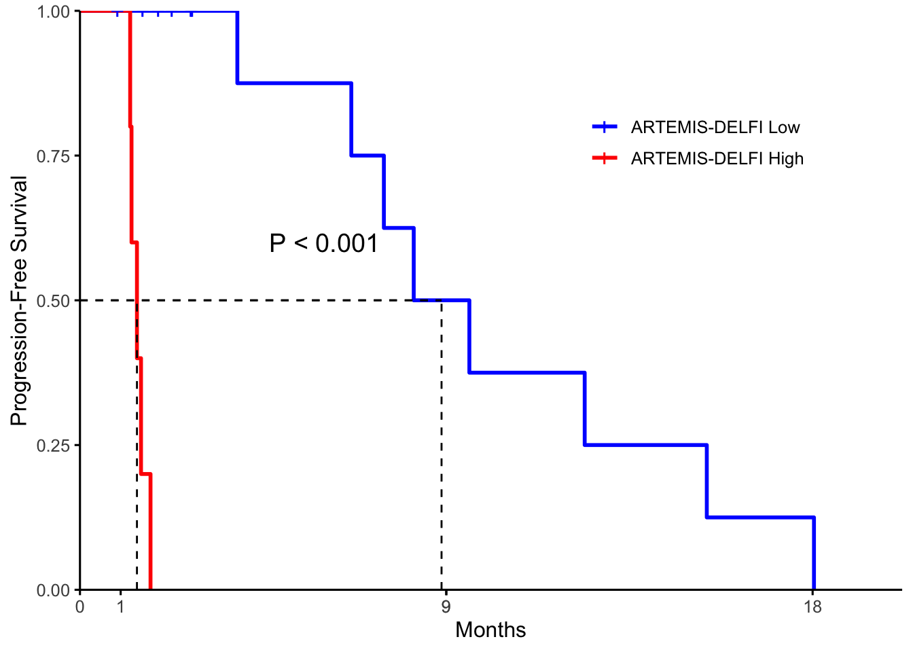
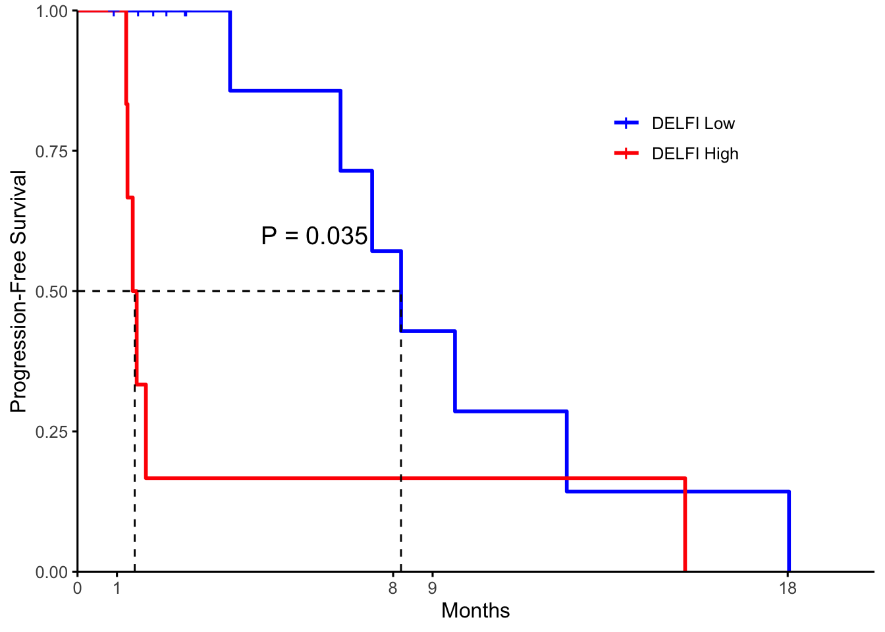

Last updated: 2024-03-08
Checks: 6 1
Knit directory: artemis2024/
This reproducible R Markdown analysis was created with workflowr (version 1.6.2). The Checks tab describes the reproducibility checks that were applied when the results were created. The Past versions tab lists the development history.
The R Markdown file has unstaged changes. To know which version of
the R Markdown file created these results, you’ll want to first commit
it to the Git repo. If you’re still working on the analysis, you can
ignore this warning. When you’re finished, you can run
wflow_publish to commit the R Markdown file and build the
HTML.
Great job! The global environment was empty. Objects defined in the global environment can affect the analysis in your R Markdown file in unknown ways. For reproduciblity it’s best to always run the code in an empty environment.
The command set.seed(20231222) was run prior to running
the code in the R Markdown file. Setting a seed ensures that any results
that rely on randomness, e.g. subsampling or permutations, are
reproducible.
Great job! Recording the operating system, R version, and package versions is critical for reproducibility.
Nice! There were no cached chunks for this analysis, so you can be confident that you successfully produced the results during this run.
Great job! Using relative paths to the files within your workflowr project makes it easier to run your code on other machines.
Great! You are using Git for version control. Tracking code development and connecting the code version to the results is critical for reproducibility.
The results in this page were generated with repository version 09fa07f. See the Past versions tab to see a history of the changes made to the R Markdown and HTML files.
Note that you need to be careful to ensure that all relevant files for
the analysis have been committed to Git prior to generating the results
(you can use wflow_publish or
wflow_git_commit). workflowr only checks the R Markdown
file, but you know if there are other scripts or data files that it
depends on. Below is the status of the Git repository when the results
were generated:
Ignored files:
Ignored: .DS_Store
Ignored: analysis/.Rhistory
Ignored: code/.DS_Store
Ignored: code/.Rhistory
Ignored: code/ARTEMIS_Pipeline/.DS_Store
Ignored: code/ARTEMIS_Pipeline/01_generate_artemis/.DS_Store
Ignored: code/ARTEMIS_Pipeline/04_artemis_pipeline/.DS_Store
Ignored: code/ARTEMIS_Pipeline/04_artemis_pipeline/counts/
Ignored: code/ARTEMIS_Pipeline/04_artemis_pipeline/read_counts/
Ignored: code/cfDNA_Models/.DS_Store
Ignored: code/cfDNA_Models/Liver_Detection/.DS_Store
Ignored: code/cfDNA_Models/Liver_Detection/Cohorts/.DS_Store
Ignored: code/cfDNA_Models/Liver_Detection/Control/.DS_Store
Ignored: code/cfDNA_Models/Lung_Detection/.DS_Store
Ignored: code/cfDNA_Models/Lung_Detection/Control/.DS_Store
Ignored: code/cfDNA_Models/Multi_Cancer_Detection/.DS_Store
Ignored: code/cfDNA_Models/Multi_Cancer_Detection/Control/.DS_Store
Ignored: code/cfDNA_Models/Multi_Cancer_TissueOfOrigin/.DS_Store
Ignored: code/cfDNA_Models/Multi_Cancer_TissueOfOrigin/Control/.DS_Store
Ignored: code/rlucas/.DS_Store
Ignored: code/rlucas/data/.DS_Store
Ignored: code/useful.stuff.aa/.DS_Store
Ignored: code/useful.stuff.aa/R/.DS_Store
Ignored: code/useful.stuff.aa/data/.DS_Store
Ignored: code/useful.stuff.aa/raw-data/
Ignored: data/.DS_Store
Ignored: data/CN_Analysis/.DS_Store
Ignored: data/Cristiano_Detection/.DS_Store
Ignored: data/Cristiano_TOO/.DS_Store
Ignored: data/Downsamples/.DS_Store
Ignored: data/Epi/.DS_Store
Ignored: data/Final_LUCAS_Ensemble/.DS_Store
Ignored: data/Final_LUCAS_Ensemble/Locked_Models/.DS_Store
Ignored: data/Final_Liver_Risk_Ensemble/.DS_Store
Ignored: data/Final_Liver_Risk_Ensemble/Results/.DS_Store
Ignored: data/GSEA/.DS_Store
Ignored: data/GSEA/KEGG_DensityKmers.GseaPreranked.1699237807444/.DS_Store
Ignored: data/GSEA/KEGG_TotalKmers.GseaPreranked.1699237843817/.DS_Store
Ignored: data/Get_Numbers/.DS_Store
Ignored: data/Kmer_Distributions/.DS_Store
Ignored: data/LINE1/.DS_Store
Ignored: data/LINE1/Downloads/.DS_Store
Ignored: data/LUCAS_Stability_Analysis/.DS_Store
Ignored: data/Mathios_Published/.DS_Store
Ignored: data/NoveltyTables/.DS_Store
Ignored: data/PCAWG/.DS_Store
Ignored: data/TCGA/.DS_Store
Ignored: data/focal_pcawg/.DS_Store
Ignored: output/
Unstaged changes:
Modified: analysis/Fig5_LUCAS.Rmd
Modified: analysis/figS23_24_lungval.Rmd
Modified: analysis/figS25.Rmd
Note that any generated files, e.g. HTML, png, CSS, etc., are not included in this status report because it is ok for generated content to have uncommitted changes.
These are the previous versions of the repository in which changes were
made to the R Markdown (analysis/figS25.Rmd) and HTML
(docs/figS25.html) files. If you’ve configured a remote Git
repository (see ?wflow_git_remote), click on the hyperlinks
in the table below to view the files as they were in that past version.
| File | Version | Author | Date | Message |
|---|---|---|---|---|
| Rmd | 72def7c | shay-279 | 2023-12-22 | all code |
| html | 72def7c | shay-279 | 2023-12-22 | all code |
library(here)here() starts at /Users/akshayaannapragada/Dropbox/ScannedNotes/VelculescuLab/Cancer Genomics Lab/plasma_repeats/artemis2024library(data.table)
library(tidyverse)── Attaching packages ─────────────────────────────────────── tidyverse 1.3.1 ──✔ ggplot2 3.3.5 ✔ purrr 0.3.4
✔ tibble 3.1.6 ✔ dplyr 1.0.8
✔ tidyr 1.2.0 ✔ stringr 1.4.0
✔ readr 2.0.1 ✔ forcats 0.5.1── Conflicts ────────────────────────────────────────── tidyverse_conflicts() ──
✖ dplyr::between() masks data.table::between()
✖ dplyr::filter() masks stats::filter()
✖ dplyr::first() masks data.table::first()
✖ dplyr::lag() masks stats::lag()
✖ dplyr::last() masks data.table::last()
✖ purrr::transpose() masks data.table::transpose()library(devtools)Loading required package: usethislibrary(ggplot2)
library(ggpubr)
library(cowplot)
Attaching package: 'cowplot'The following object is masked from 'package:ggpubr':
get_legendload_all(here("code","useful.stuff.aa")) # Loadℹ Loading useful.stuff.aalibrary(caret)Loading required package: lattice
Attaching package: 'caret'The following object is masked from 'package:purrr':
liftlibrary(recipes)
Attaching package: 'recipes'The following object is masked from 'package:devtools':
checkThe following object is masked from 'package:stringr':
fixedThe following object is masked from 'package:stats':
steplibrary(pROC)Type 'citation("pROC")' for a citation.
Attaching package: 'pROC'The following objects are masked from 'package:stats':
cov, smooth, varlibrary(gbm)Loaded gbm 2.1.8library(readxl)
dat<-fread(here("data","Lung_Monitoring","lung_dynamics_artemis.csv"))
#dat<-dat %>% filter(id != "PGDX7348P1_Amended" & id != "PGDX7348P2_Amended") #something is weird
dat<-dat %>% select(-V1)
e<-fread(here("data","Kmer_Distributions","Expected.csv"))
e<-e %>% filter(total_kmers>1000)
e$fam<-sapply(str_split(e$feature,"#"),"[",2)
e$fam<-sapply(str_split(e$fam,"_"),"[",1)
e<-e %>% mutate(fam=if_else(is.na(fam),"Satellite",fam))
e<-e %>% mutate(fam=if_else(fam %in% c("rRNA","snRNA","scRNA","tRNA","srpRNA"),"RNA/DNA Elements",fam))
e<-e %>% mutate(fam=if_else(fam %in% c("DNA","DNA?","RC","Retroposon"),"RNA/DNA Elements",fam))
artemis<-dat %>% select(id,e$feature)
test<-artemis %>% gather(key=feature,value=count,-id)
test<-inner_join(test,e %>% select(feature,fam),by="feature")
test<-test %>% group_by(id,fam) %>% summarize(c=scale(count)[,1],f=feature)`summarise()` has grouped output by 'id', 'fam'. You can override using the
`.groups` argument.test<-test %>% ungroup() %>% select(-fam)
test<-test %>% spread(key=f,value=c)
artemis<-test
delfi<-fread(here("data","Lung_Monitoring","delfi_features.csv"))
delfi$id<-gsub("_Amended","",delfi$id)
dat<-inner_join(artemis,delfi,by="id")
epi<-fread(here("data","Lung_Monitoring","lung_dynamics_epi.csv"))
epi$id<-gsub("_Amended","",epi$id)
dat<-inner_join(dat,epi,by="id")
#These are the models we actually want
model<-readRDS(here("data","Final_LUCAS_Ensemble","Locked_Models","ARTEMIS_Ensemble.rds"))
model2<-readRDS(here("data","Mathios_Published","model_seq_glm.rds"))
model3<-readRDS(here("data","Final_LUCAS_Ensemble","Locked_Models","ARTEMIS_single_DELFI_SSLs_Ensemble.rds"))
#I have to generate some SSL scores though to use:
s1<-readRDS(here("data","Final_LUCAS_Ensemble","Locked_Models","Cov_GBM.rds"))
s2<-readRDS(here("data","Final_LUCAS_Ensemble","Locked_Models","Ratios_ssl.rds"))
s3<-readRDS(here("data","Final_LUCAS_Ensemble","Locked_Models","zscores_ssl.rds"))
s4<-readRDS(here("data","Final_LUCAS_Ensemble","Locked_Models","Epi_ssl.rds"))
s5<-readRDS(here("data","Final_LUCAS_Ensemble","Locked_Models","LINE_ssl.rds"))
s6<-readRDS(here("data","Final_LUCAS_Ensemble","Locked_Models","LTR_ssl.rds"))
s7<-readRDS(here("data","Final_LUCAS_Ensemble","Locked_Models","SINE_ssl.rds"))
s8<-readRDS(here("data","Final_LUCAS_Ensemble","Locked_Models","Sat_ssl.rds"))
s9<-readRDS(here("data","Final_LUCAS_Ensemble","Locked_Models","RNA_TE_ssl.rds"))
d<-tibble(id=dat$id,Cov_GBM=predict(s1,dat,type="prob")$cancer,Ratios_ssl=predict(s2,dat,type="prob")$cancer,
zscores_ssl=predict(s3,dat,type="prob")$cancer,Epi_ssl=predict(s4,dat,type="prob")$cancer,LINE_ssl=predict(s5,dat,type="prob")$cancer,
LTR_ssl=predict(s6,dat,type="prob")$cancer,SINE_ssl=predict(s7,dat,type="prob")$cancer,Sat_ssl=predict(s8,dat,type="prob")$cancer,RNA_TE_ssl=predict(s9,dat,type="prob")$cancer)
meta<-fread(here("data","Plasma_CV_meta_HiSeq.csv"))
#Mathios data had a bunch of unused columns and it only breaks some versions of R and i don't want to deal with it so now we have a bunch of dummy columns
dat$clinical_nlratio<-NA
dat$clinical_CRP<-NA
dat$clinical_cfdna_conc<-NA
dat$clinical_age<-NA
dat$clinical_IL6<-NA
dat$clinical_YKL40<-NA
dat$clinical_CEA<-NA
dat$clinical_bmi<-NA
dat$clinical_packyears<-NA
dat$clinical_smokingstatus<-NA
dat$clinical_COPD<-NA
dat$multinucratio<-NA
scores<-tibble(Artemis_Score=predict(model,d %>% select(LINE_ssl,LTR_ssl,SINE_ssl,Sat_ssl,RNA_TE_ssl,Epi_ssl),type="prob")$cancer,
id=dat$id,
delfi_score=predict(model2,dat,type="prob")$cancer)Warning: There was 1 column that was a factor when the recipe was prepped:
'clinical_smokingstatus'.
This may cause errors when processing new data.Warning: 'keep_original_cols' was added to `step_pca()` after this recipe was created.
Regenerate your recipe to avoid this warning.d<-inner_join(d,scores,by="id")
d$combo_score<-predict(model3,d %>% select(Artemis_Score,Ratios_ssl,Cov_GBM,zscores_ssl),type="prob")$cancer
d<-d %>% select(id,Artemis_Score,delfi_score,combo_score)
data1<-fread(here("data","Lung_Monitoring","meta2.csv"))
data2<-fread(here("data","Lung_Monitoring","dynamics.csv"))
meta<-tibble(right_join(data1,data2 %>% select(-Patient),by=c("Patient Timepoint"="Timepoint ID")))
meta<-inner_join(d,meta,by=c("id"="sample"))
meta$`Neg Median healthy correlation`<- -1*(meta$`Median healthy correlation`)
#meta<-inner_join(meta,scores,by=c("id"="id"))
m<-meta %>% select(Patient,`Max MAF`,`day`,category,
`Initial radiographic response to treatment`,Artemis_Score,`Timepoint Significance`,`Days since Treatment`,`Neg Median healthy correlation`,delfi_score,combo_score)
m<-m %>% gather(key="feature",value="amount",`Max MAF`,Artemis_Score,`Neg Median healthy correlation`,combo_score,delfi_score)
PFS_order<-c("CGPLLU244","CGPLLU246","CGLU316","CGPLLU13","CGPLLU245","CGPLLU267","CGPLLU89",
"CGLU369","CGPLLU271","CGPLLU266","CGPLLU86","CGPLLU14","CGPLLU88","CGPLLU43","CGLU344","CGPLLU269",
"CGPLLU265","CGPLLU264","CGLU373")
coef_order<-c(unique(m$feature)[1],unique(m$feature)[3],"ARTEMIS-DELFI Score","DELFI Score","ARTEMIS Score")
m$Patient<-factor(m$Patient,levels=PFS_order)
m<-m %>% mutate(feature=if_else(feature=="Artemis_Score","ARTEMIS Score",feature))
m<-m %>% mutate(feature=if_else(feature=="delfi_score","DELFI Score",feature))
m<-m %>% mutate(feature=if_else(feature=="combo_score","ARTEMIS-DELFI Score",feature))
m$feature<-factor(m$feature,levels=coef_order)
#m<-m %>% filter(Patient != "CGPLLU88") #This is the one missing stuffPFS<-read_xlsx(here("data","Lung_Monitoring","PFS.xlsx"))
m2<-inner_join(m,PFS,by="Patient")
dat<-m2 %>% filter(`Timepoint Significance`=="Post treatment" & feature=="ARTEMIS Score")
dat2<-dat %>% dplyr::group_by(Patient) %>% summarize(`Days since Treatment`=min(`Days since Treatment`))
dat3<-dat %>% dplyr::group_by(Patient) %>% summarize(`Days since Treatment`=max(`Days since Treatment`))
dat4<-m2 %>% filter(`Timepoint Significance`=="Pre treatment" & feature=="ARTEMIS Score")
dat4<-dat4 %>% dplyr::group_by(Patient) %>% summarize(`Days since Treatment`=min(`Days since Treatment`))
dat0<-inner_join(m2,dat4,by=c("Patient","Days since Treatment"))
dat0<-dat0 %>% filter(feature=="ARTEMIS Score")
dat0$baseline<-dat0$amount
dat<-inner_join(dat,dat2,by=c("Patient","Days since Treatment"))
library(survival)
Attaching package: 'survival'The following object is masked from 'package:caret':
clusterlibrary(survminer)
Attaching package: 'survminer'The following object is masked from 'package:survival':
myelomadat$surv_pfs<-dat$`Progression-free Survival (months)`
dat$censor_pfs<-if_else(dat$`Progression-free Survival (months)`=="Ongoing",0,1)
dat3$last_time<-dat3$`Days since Treatment`
dat<-inner_join(dat,dat3 %>% select(Patient,last_time),by="Patient")
dat<-inner_join(dat,dat0 %>% select(Patient,baseline),by="Patient")
dat<-dat %>% mutate(surv_pfs=if_else(surv_pfs=="Ongoing",last_time/30.5,as.numeric(surv_pfs)))Warning in replace_with(out, !condition, false, "`false`", "length of
`condition`"): NAs introduced by coerciond<-as.data.frame(dat)
d$survival <- with(d, Surv(surv_pfs, censor_pfs))
d$perc<-((d$amount-d$baseline)/d$baseline)
#med<- -0.3
med<- (m2 %>% filter(feature=="ARTEMIS Score" & `Timepoint Significance`=="Pre treatment") %>% summarize(m=median(amount)))$m
d<-d %>% mutate(med_grp=if_else(amount<=med,0,1))
fit <- survfit(survival ~ med_grp, data = d)
fig <- ggsurvplot(fit, data = d,
surv.median.line = "hv", ## Add medians survival
## Add p-value and tervals
pval = FALSE,
conf.int = FALSE,
## Add risk table
risk.table = FALSE,
tables.height = 0.2,
tables.theme = theme_cleantable(),
axes.offset=FALSE,
## Color palettes. Use custom color: c("#E7B800", "#2E9FDF"),
## or brewer color (e.g.: "Dark2"), or ggsci color (e.g.: "jco")
##palette = c("#E7B800", "#2E9FDF"),
legend=c(0.75, 0.8),
legend.title="",
palette=c("blue", "red"),
legend.labs=c("ARTEMIS Low", "ARTEMIS High"),
##legend.labs=labels,
ggtheme = theme_classic(base_size=12) # Change ggplot2 theme
) +
ylab("Progression-Free Survival") +
xlab("Months")
medians <- surv_median(fit)$medianWarning: `select_()` was deprecated in dplyr 0.7.0.
Warning: Please use `select()` instead. breaks <- round(sort(c(seq(0, max(d$surv_pfs), by=max(d$surv_pfs)/2), medians)),0)
#breaks <- breaks[ breaks != 1000 ]
breaks<-round(breaks,1)
fig$plot <- fig$plot +
scale_x_continuous(breaks=breaks, expand=expansion(mult=c(0, 0.01)))Scale for 'x' is already present. Adding another scale for 'x', which will
replace the existing scale. X2 <- survdiff(Surv(surv_pfs,censor_pfs) ~ med_grp, data=d)$chisq
p <- round(1-pchisq(X2, df=1), 4)
if(p < 0.001){
plabel <- "P < 0.001"
} else {
plabel <- paste0("P = ", round(p, 3))
}
fig$plot <- fig$plot + annotate("text", x=max(dat$surv_pfs)/3, y=0.6, label=plabel,
size=5)
a<-fig$plot
a
| Version | Author | Date |
|---|---|---|
| 72def7c | shay-279 | 2023-12-22 |
overall_1<-a+ggtitle("ARTEMIS Score")+theme(plot.title = element_text(hjust = 0.5))PFS<-read_xlsx(here("data","Lung_Monitoring","PFS.xlsx"))
m2<-inner_join(m,PFS,by="Patient")
dat<-m2 %>% filter(`Timepoint Significance`=="Post treatment" & feature=="ARTEMIS-DELFI Score")
dat2<-dat %>% dplyr::group_by(Patient) %>% summarize(`Days since Treatment`=min(`Days since Treatment`))
dat3<-dat %>% dplyr::group_by(Patient) %>% summarize(`Days since Treatment`=max(`Days since Treatment`))
dat4<-m2 %>% filter(`Timepoint Significance`=="Pre treatment" & feature=="ARTEMIS-DELFI Score")
dat4<-dat4 %>% dplyr::group_by(Patient) %>% summarize(`Days since Treatment`=min(`Days since Treatment`))
dat0<-inner_join(m2,dat4,by=c("Patient","Days since Treatment"))
dat0<-dat0 %>% filter(feature=="ARTEMIS-DELFI Score")
dat0$baseline<-dat0$amount
dat<-inner_join(dat,dat2,by=c("Patient","Days since Treatment"))
library(survival)
library(survminer)
dat$surv_pfs<-dat$`Progression-free Survival (months)`
dat$censor_pfs<-if_else(dat$`Progression-free Survival (months)`=="Ongoing",0,1)
dat3$last_time<-dat3$`Days since Treatment`
dat<-inner_join(dat,dat3 %>% select(Patient,last_time),by="Patient")
dat<-inner_join(dat,dat0 %>% select(Patient,baseline),by="Patient")
dat<-dat %>% mutate(surv_pfs=if_else(surv_pfs=="Ongoing",last_time/30.5,as.numeric(surv_pfs)))Warning in replace_with(out, !condition, false, "`false`", "length of
`condition`"): NAs introduced by coerciond<-as.data.frame(dat)
d$survival <- with(d, Surv(surv_pfs, censor_pfs))
d$perc<-((d$amount-d$baseline)/d$baseline)
#med<- -0.3
med<- (m2 %>% filter(feature=="ARTEMIS-DELFI Score" & `Timepoint Significance`=="Pre treatment") %>% summarize(m=median(amount)))$m
d<-d %>% mutate(med_grp=if_else(amount<=med,0,1))
fit <- survfit(survival ~ med_grp, data = d)
fig <- ggsurvplot(fit, data = d,
surv.median.line = "hv", ## Add medians survival
## Add p-value and tervals
pval = FALSE,
conf.int = FALSE,
## Add risk table
risk.table = FALSE,
tables.height = 0.2,
tables.theme = theme_cleantable(),
axes.offset=FALSE,
## Color palettes. Use custom color: c("#E7B800", "#2E9FDF"),
## or brewer color (e.g.: "Dark2"), or ggsci color (e.g.: "jco")
##palette = c("#E7B800", "#2E9FDF"),
legend=c(0.75, 0.8),
legend.title="",
palette=c("blue", "red"),
legend.labs=c("ARTEMIS-DELFI Low", "ARTEMIS-DELFI High"),
##legend.labs=labels,
ggtheme = theme_classic(base_size=12) # Change ggplot2 theme
) +
ylab("Progression-Free Survival") +
xlab("Months")
medians <- surv_median(fit)$median
breaks <- round(sort(c(seq(0, max(d$surv_pfs), by=max(d$surv_pfs)/2), medians)),0)
#breaks <- breaks[ breaks != 1000 ]
breaks<-round(breaks,1)
fig$plot <- fig$plot +
scale_x_continuous(breaks=breaks, expand=expansion(mult=c(0, 0.01)))Scale for 'x' is already present. Adding another scale for 'x', which will
replace the existing scale. X2 <- survdiff(Surv(surv_pfs,censor_pfs) ~ med_grp, data=d)$chisq
p <- round(1-pchisq(X2, df=1), 4)
if(p < 0.001){
plabel <- "P < 0.001"
} else {
plabel <- paste0("P = ", round(p, 3))
}
fig$plot <- fig$plot + annotate("text", x=max(dat$surv_pfs)/3, y=0.6, label=plabel,
size=5)
a<-fig$plot
a
| Version | Author | Date |
|---|---|---|
| 72def7c | shay-279 | 2023-12-22 |
overall_2<-a+ggtitle("ARTEMIS-DELFI Score")+theme(plot.title = element_text(hjust = 0.5))PFS<-read_xlsx(here("data","Lung_Monitoring","PFS.xlsx"))
m2<-inner_join(m,PFS,by="Patient")
dat<-m2 %>% filter(`Timepoint Significance`=="Post treatment" & feature=="DELFI Score")
dat2<-dat %>% dplyr::group_by(Patient) %>% summarize(`Days since Treatment`=min(`Days since Treatment`))
dat3<-dat %>% dplyr::group_by(Patient) %>% summarize(`Days since Treatment`=max(`Days since Treatment`))
dat4<-m2 %>% filter(`Timepoint Significance`=="Pre treatment" & feature=="DELFI Score")
dat4<-dat4 %>% dplyr::group_by(Patient) %>% summarize(`Days since Treatment`=min(`Days since Treatment`))
dat0<-inner_join(m2,dat4,by=c("Patient","Days since Treatment"))
dat0<-dat0 %>% filter(feature=="ARTEMIS Score")
dat0$baseline<-dat0$amount
dat<-inner_join(dat,dat2,by=c("Patient","Days since Treatment"))
library(survival)
library(survminer)
dat$surv_pfs<-dat$`Progression-free Survival (months)`
dat$censor_pfs<-if_else(dat$`Progression-free Survival (months)`=="Ongoing",0,1)
dat3$last_time<-dat3$`Days since Treatment`
dat<-inner_join(dat,dat3 %>% select(Patient,last_time),by="Patient")
dat<-inner_join(dat,dat0 %>% select(Patient,baseline),by="Patient")
dat<-dat %>% mutate(surv_pfs=if_else(surv_pfs=="Ongoing",last_time/30.5,as.numeric(surv_pfs)))Warning in replace_with(out, !condition, false, "`false`", "length of
`condition`"): NAs introduced by coerciond<-as.data.frame(dat)
d$survival <- with(d, Surv(surv_pfs, censor_pfs))
d$perc<-((d$amount-d$baseline)/d$baseline)
#med<- -0.3
med<- (m2 %>% filter(feature=="DELFI Score" & `Timepoint Significance`=="Pre treatment") %>% summarize(m=median(amount)))$m
d<-d %>% mutate(med_grp=if_else(amount<=med,0,1))
fit <- survfit(survival ~ med_grp, data = d)
fig <- ggsurvplot(fit, data = d,
surv.median.line = "hv", ## Add medians survival
## Add p-value and tervals
pval = FALSE,
conf.int = FALSE,
## Add risk table
risk.table = FALSE,
tables.height = 0.2,
tables.theme = theme_cleantable(),
axes.offset=FALSE,
## Color palettes. Use custom color: c("#E7B800", "#2E9FDF"),
## or brewer color (e.g.: "Dark2"), or ggsci color (e.g.: "jco")
##palette = c("#E7B800", "#2E9FDF"),
legend=c(0.75, 0.8),
legend.title="",
palette=c("blue", "red"),
legend.labs=c("DELFI Low", "DELFI High"),
##legend.labs=labels,
ggtheme = theme_classic(base_size=12) # Change ggplot2 theme
) +
ylab("Progression-Free Survival") +
xlab("Months")
medians <- surv_median(fit)$median
breaks <- round(sort(c(seq(0, max(d$surv_pfs), by=max(d$surv_pfs)/2), medians)),0)
#breaks <- breaks[ breaks != 1000 ]
breaks<-round(breaks,1)
fig$plot <- fig$plot +
scale_x_continuous(breaks=breaks, expand=expansion(mult=c(0, 0.01)))Scale for 'x' is already present. Adding another scale for 'x', which will
replace the existing scale. X2 <- survdiff(Surv(surv_pfs,censor_pfs) ~ med_grp, data=d)$chisq
p <- round(1-pchisq(X2, df=1), 4)
if(p < 0.001){
plabel <- "P < 0.001"
} else {
plabel <- paste0("P = ", round(p, 3))
}
fig$plot <- fig$plot + annotate("text", x=max(dat$surv_pfs)/3, y=0.6, label=plabel,
size=5)
a<-fig$plot
a
| Version | Author | Date |
|---|---|---|
| 72def7c | shay-279 | 2023-12-22 |
overall_3<-a+ggtitle("DELFI Score")+theme(plot.title = element_text(hjust = 0.5))
sessionInfo()R version 4.0.5 (2021-03-31)
Platform: x86_64-apple-darwin17.0 (64-bit)
Running under: macOS Big Sur 10.16
Matrix products: default
BLAS: /Library/Frameworks/R.framework/Versions/4.0/Resources/lib/libRblas.dylib
LAPACK: /Library/Frameworks/R.framework/Versions/4.0/Resources/lib/libRlapack.dylib
locale:
[1] en_US.UTF-8/en_US.UTF-8/en_US.UTF-8/C/en_US.UTF-8/en_US.UTF-8
attached base packages:
[1] stats graphics grDevices utils datasets methods base
other attached packages:
[1] survminer_0.4.9 survival_3.2-13
[3] readxl_1.3.1 gbm_2.1.8
[5] pROC_1.17.0.1 recipes_0.1.16
[7] caret_6.0-88 lattice_0.20-44
[9] useful.stuff.aa_0.0.0.9000 cowplot_1.1.1
[11] ggpubr_0.4.0 devtools_2.4.2
[13] usethis_2.0.1 forcats_0.5.1
[15] stringr_1.4.0 dplyr_1.0.8
[17] purrr_0.3.4 readr_2.0.1
[19] tidyr_1.2.0 tibble_3.1.6
[21] ggplot2_3.3.5 tidyverse_1.3.1
[23] data.table_1.14.0 here_1.0.1
[25] workflowr_1.6.2
loaded via a namespace (and not attached):
[1] backports_1.2.1 plyr_1.8.6 splines_4.0.5
[4] listenv_0.8.0 digest_0.6.27 foreach_1.5.1
[7] htmltools_0.5.2 fansi_0.5.0 magrittr_2.0.1
[10] memoise_2.0.0 tzdb_0.1.2 openxlsx_4.2.4
[13] remotes_2.4.0 globals_0.14.0 modelr_0.1.8
[16] gower_0.2.2 prettyunits_1.1.1 colorspace_2.0-2
[19] rvest_1.0.1 haven_2.4.3 xfun_0.25
[22] callr_3.7.0 crayon_1.4.1 jsonlite_1.7.2
[25] zoo_1.8-9 iterators_1.0.13 glue_1.6.2
[28] gtable_0.3.0 ipred_0.9-11 car_3.0-11
[31] pkgbuild_1.2.0 shape_1.4.6 future.apply_1.8.1
[34] abind_1.4-5 scales_1.2.1 DBI_1.1.1
[37] rstatix_0.7.0 Rcpp_1.0.7 xtable_1.8-4
[40] bit_4.0.4 foreign_0.8-81 km.ci_0.5-2
[43] stats4_4.0.5 lava_1.6.10 prodlim_2019.11.13
[46] glmnet_4.1-2 httr_1.4.2 ellipsis_0.3.2
[49] farver_2.1.0 pkgconfig_2.0.3 nnet_7.3-16
[52] sass_0.4.0 dbplyr_2.1.1 utf8_1.2.2
[55] labeling_0.4.2 tidyselect_1.1.1 rlang_1.1.1
[58] reshape2_1.4.4 later_1.3.0 munsell_0.5.0
[61] cellranger_1.1.0 tools_4.0.5 cachem_1.0.6
[64] cli_3.6.1 generics_0.1.0 broom_0.7.9
[67] evaluate_0.14 fastmap_1.1.0 yaml_2.2.1
[70] bit64_4.0.5 ModelMetrics_1.2.2.2 processx_3.5.2
[73] knitr_1.33 fs_1.5.0 zip_2.2.0
[76] survMisc_0.5.5 future_1.22.1 nlme_3.1-152
[79] whisker_0.4 xml2_1.3.2 compiler_4.0.5
[82] rstudioapi_0.13 curl_4.3.2 testthat_3.0.4
[85] ggsignif_0.6.2 reprex_2.0.1 bslib_0.3.0
[88] stringi_1.7.4 highr_0.9 ps_1.6.0
[91] desc_1.3.0 Matrix_1.3-4 KMsurv_0.1-5
[94] vctrs_0.4.0 pillar_1.6.2 lifecycle_1.0.3
[97] jquerylib_0.1.4 httpuv_1.6.2 R6_2.5.1
[100] promises_1.2.0.1 gridExtra_2.3 rio_0.5.27
[103] parallelly_1.27.0 sessioninfo_1.1.1 codetools_0.2-18
[106] MASS_7.3-54 assertthat_0.2.1 pkgload_1.2.1
[109] rprojroot_2.0.2 withr_2.5.0 parallel_4.0.5
[112] hms_1.1.0 grid_4.0.5 rpart_4.1-15
[115] timeDate_3043.102 class_7.3-19 rmarkdown_2.10
[118] carData_3.0-4 git2r_0.28.0 lubridate_1.7.10